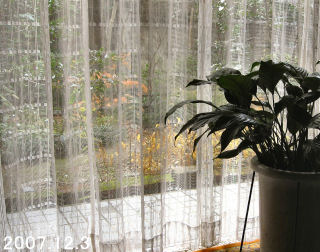

|  カーテンの向こうに見える紅葉した青しだれ |
１２月３日 今日の寒さで黄色い珊瑚もみじが散ってゆきます。昨夜の雨で手向け山は地面を赤に染めました。 家の中からカーテン越しにハラハラと散る姿を味わいました。 蜘蛛が巣を張っていて色々な葉っぱまで一列に引っかかって居ました。 小さくても庭が有ることは幸せです。季節を楽しみ暮しの思い出を記憶出来るからです。季節の変わり目の自然の美しさは例えようがありません。我が家なら夫婦の歴史も上乗せして独りよがりの自分の楽しさを抱きしめられます。 プチも居ない今、多少重荷になりつつある植物達に愛を感じます。今日はたった一つ咲き残って寒さにうなだれている”ブルームーン”の蕾を切りガラスの器に入れました。固い蕾は私を見つめているようです蕾に顔を寄せると素敵な匂い！今年最後のプレゼントです。年が変わったら、バラを土におろしたいと思っています。 ガラス戸は横桟があるのでガラス戸を開けて写真を写しましたが、どれが何やら判りませんので（私には判りますが）説明画像付きにしました。庭、手前黄色は宝ちゃく草です。 喪のはがきは老人には辛いですね、今日奥様に当たる画の友人に電話を掛けました。お嬢さんが出られ 明るく 二人とも認知症です、「可愛い父でした」と、９２歳で、最後は肺炎で逝かれたお父様のお話をして下さいました。母は４年前から記憶がおかしくなりました。 この方と私は何回も上野や山種に画を観に行きました。彼女に導かれて神田や水道橋辺りのグリーンホテルに泊まり、近くの天麩羅屋でボリュームたっぷりの天丼を買い”美味しい美味しい”と笑いながら食べた事が昨日のように思い出されます。 この４～５年、年賀状も出さず他所から訊いた噂話に流された事を心から悔やみました。 |